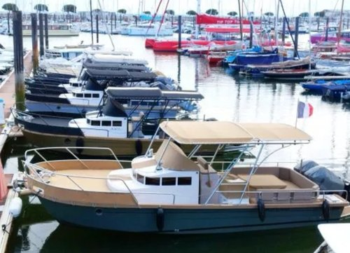
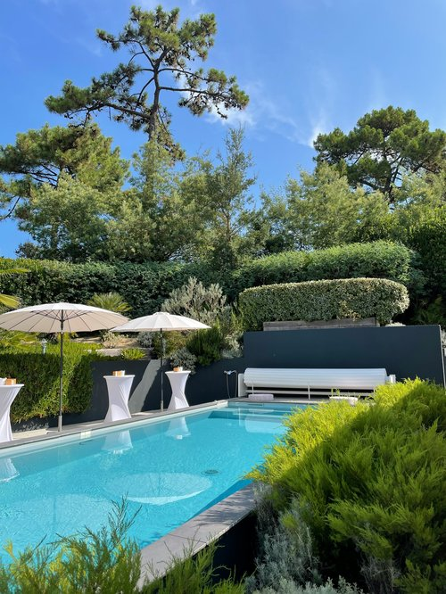

Proposition d'Intendance & Vigilance Immobilière Villas
Pourquoi choisir ma prestation ?

- Ancrage Local : Résident à Arcachon, proximité immédiate et intervention rapide.
- Expérience opérationnelle : maîtrise de la gestion de copropriété et de volumes importants
La Surveillance et Vigilance (Le cœur du contrat)
- Passages réguliers : 1 à 2 fois par semaine pour vérifier l'état général (intérieur/extérieur).
- Après intempéries : Passage systématique après un coup de vent ou un gros orage (très fréquent sur le Bassin) pour vérifier les toitures, les baies vitrées et les infiltrations.
- Aération : Ouvrir les fenêtres pour éviter l'humidité et l'odeur de « renfermé » typique des maisons de bord de mer.
- Relevé du courrier : Réexpédition ou traitement des factures/avis urgents.
La Gestion de la Maintenance (Le « Chef d'orchestre »)
- Suivi des contrats : Entreprises espaces verts, jardinage / Suivi entretien pisciniste, Maintenance sécurité et protection (Entreprises d'alarme) etc.
- Accueil des artisans : Ouverture de la porte, surveillance des travaux de réparation et vérification du chantier avant le départ de l'artisan.
- Petite maintenance : Changement d'une ampoule, vérification du bon fonctionnement du chauffage avant l'hiver. (Devis sur demande)
Forfait base Mensuel « Sérénité & Vigilance »
Tarif mensuel indicatif basé sur la superficie du bien : 450 € à 650 €
Ce forfait fixe garantit la sécurité et le maintien en état du patrimoine tout au long de l'année.
- Vigilance hebdomadaire : Passage 1 fois par semaine (contrôle des accès, vérification des fuites, aération, relevé du courrier).
- Vigilance post-intempéries : Passage systématique après chaque tempête ou fort coup de vent sur le Bassin (vérification toiture, ouverture jardin).
- Gestion des intervenants : Accueil et contrôle des prestataires extérieurs suite intervention (jardinier, pisciniste, artisans ou autres).
- Reporting : Compte-rendu par SMS ou mail (rapport + photos digitalisés) si événement particulier.
Service de la conciergerie (Le « Luxe »)

- Forfait par intervention pour la mise en service complète du bien avant arrivée : 85 € à 140 €
Ouverture des volets, mise en route chauffage/climatisation, mise en place mobilier extérieur, liste de courses de bienvenue sur mesure (montant des achats facturé au réel sur présentation de justificatifs).
Fermeture : Sécurisation intégrale du bien après départ — contrôle des installations, coupure des arrivées si requis, fermeture complète, activation de l'alarme et mise en protection des volets. - Forfait d'intervention d'urgence par déplacement (Jour) : 100 € + 40 € / heure
- En fonction période annuelle, intervention rapide suite à déclenchement d'alarme, suspicion d'intrusion ou incident technique, intempéries etc.
Prestations Techniques (à la demande)
Ces prestations sont facturées en sus du forfait de base.
- Entretien et Nettoyage facturé à l'heure : 35 € à 40 €
Ménage approfondi avant/après séjour, entretien des matériaux nobles (marbre, parquets, terrasses).
Toute demande spécifique pourra faire l'objet d'une proposition tarifaire forfaitaire personnalisée.